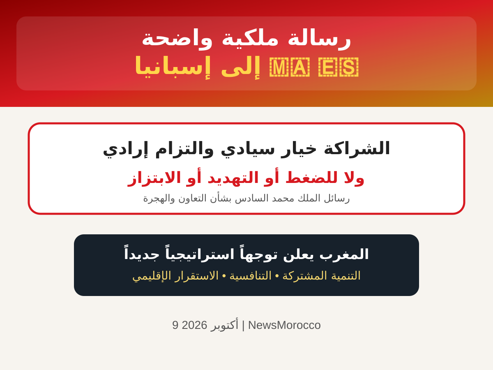

رسالة الملك محمد السادس إلى إسبانيا تتصدر الإعلام الإسباني

أثارت مضامين الخطاب الذي وجهه الملك محمد السادس بمناسبة افتتاح الدورة الجديدة للبرلمان اهتماماً واسعاً في وسائل الإعلام الإسبانية، خصوصاً بسبب الرسائل المرتبطة بالعلاقات المغربية الإسبانية وملف الهجرة.
الشراكة خيار سيادي
أكد الملك محمد السادس أن الشراكة مع إسبانيا خيار سيادي والتزام إرادي، مشدداً على أنها لا ينبغي أن تكون خاضعة لأي ضغط أو تهديد أو ابتزاز.
نموذج التعاون في مجال الهجرة
وأشار الملك إلى أن النموذج الحالي للتعاون في مجال الهجرة أصبح متجاوزاً، معتبراً أن الأزمات المتكررة تؤكد الحاجة إلى مراجعة هذا النموذج وتطويره بما يخدم مصالح الطرفين.
كما أشار إلى تحديات مرتبطة ببعض المقتضيات القانونية والقرارات القضائية في إسبانيا، والتي قال إنها تعيق في بعض الحالات إعادة القاصرين والأشخاص المعنيين بإجراءات العودة.
رؤية استراتيجية جديدة
وأعلن الملك أن المغرب سيقدم لشركائه وثيقة تتضمن رؤية استراتيجية واضحة وعملية، ترمي إلى ترسيخ التنمية المشتركة والتنافسية الاقتصادية والاستقرار الإقليمي.
وتأتي هذه الرسائل في سياق حساس للعلاقات المغربية الإسبانية، بعد الأزمة المرتبطة بالهجرة في سبتة، وقبل الزيارة المرتقبة للعاهل الإسباني إلى سبتة ومليلية.